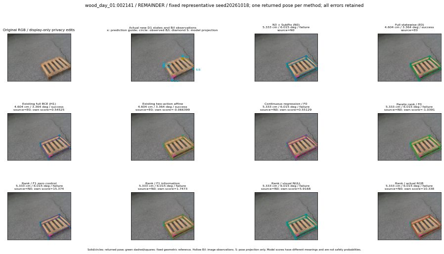

실선은 반환 자세, 초록 점선은 고정 기하 참조입니다. S는 영상 관측이 아닙니다. 점수는 모델별 의미가 다르며 보정된 안전 확률이 아닙니다. 개인정보 처리는 표시 사본에만 적용했습니다.
| 방법·seed | 위치 / 회전 / 공동성공 | 실제 출처 | 선택 후보 | 각 모델 자체 점수 |
|---|---|---|---|---|
| N0 | 5.333 cm / 6.015 deg / failure | N0 | N/A | N/A |
| E0 | 4.604 cm / 3.364 deg / success | E0 | N/A | N/A |
| E0_REGENERATED | 4.604 cm / 3.364 deg / success | E0 | E0_REGENERATED | N/A |
| POSEFIX_SUBPIX_PF_ANCHOR | 5.514 cm / 4.638 deg / failure | OTHER | N/A | N/A |
| POSEFIX_SUBPIX_YOLO_ANCHOR | 5.514 cm / 4.638 deg / failure | OTHER | N/A | N/A |
| D1_H1_MLP_s20261018 | 4.604 cm / 3.364 deg / success | E0 | E0_REGENERATED | 0.5452544689178467 |
| D1_H1_MLP_s20261019 | 4.604 cm / 3.364 deg / success | E0 | E0_REGENERATED | 0.5046810507774353 |
| D1_H1_MLP_s20261020 | 4.604 cm / 3.364 deg / success | E0 | E0_REGENERATED | -0.203260600566864 |
| D1_H1_PAIR_MLP_s20261018 | 5.333 cm / 6.015 deg / failure | N0 | N0 | -0.5748366117477417 |
| D1_H1_PAIR_MLP_s20261019 | 5.333 cm / 6.015 deg / failure | N0 | N0 | -0.30642834305763245 |
| D1_H1_PAIR_MLP_s20261020 | 5.333 cm / 6.015 deg / failure | N0 | N0 | 0.19186708331108093 |
| D1_H1_PAIR_ROLE_AFFINE_s20261018 | 4.604 cm / 3.364 deg / success | E0 | E0_REGENERATED | -0.06639914959669113 |
| D1_H1_PAIR_ROLE_AFFINE_s20261019 | 5.333 cm / 6.015 deg / failure | N0 | N0 | -0.14213159680366516 |
| D1_H1_PAIR_ROLE_AFFINE_s20261020 | 5.333 cm / 6.015 deg / failure | N0 | N0 | -0.04924865812063217 |
| R_CONT_F0_s20261018 | 5.333 cm / 6.015 deg / failure | N0 | N0 | 0.5512884259223938 |
| R_CONT_F0_s20261019 | 5.333 cm / 6.015 deg / failure | N0 | N0 | 0.5372917652130127 |
| R_CONT_F0_s20261020 | 5.333 cm / 6.015 deg / failure | N0 | N0 | 0.6241986155509949 |
| R_ORDER_F0_s20261018 | 5.333 cm / 6.015 deg / failure | N0 | N0 | -1.0391299724578857 |
| R_ORDER_F0_s20261019 | 5.333 cm / 6.015 deg / failure | N0 | N0 | 0.6470193862915039 |
| R_ORDER_F0_s20261020 | 5.333 cm / 6.015 deg / failure | N0 | N0 | 2.801562786102295 |
| R_ORDER_F1_ZERO_s20261018 | 5.333 cm / 6.015 deg / failure | N0 | N0 | 15.374436378479004 |
| R_ORDER_F1_ZERO_s20261019 | 5.333 cm / 6.015 deg / failure | N0 | N0 | 10.409194946289062 |
| R_ORDER_F1_ZERO_s20261020 | 5.333 cm / 6.015 deg / failure | N0 | N0 | 7.713356971740723 |
| R_ORDER_F1_s20261018 | 5.333 cm / 6.015 deg / failure | N0 | N0 | 1.7473349571228027 |
| R_ORDER_F1_s20261019 | 5.333 cm / 6.015 deg / failure | N0 | N0 | 8.166417121887207 |
| R_ORDER_F1_s20261020 | 5.333 cm / 6.015 deg / failure | N0 | N0 | 0.5875059366226196 |
| V_ORDER_NULL_s20261018 | 5.333 cm / 6.015 deg / failure | N0 | N0 | 5.916833400726318 |
| V_ORDER_NULL_s20261019 | 5.333 cm / 6.015 deg / failure | N0 | N0 | 4.16222620010376 |
| V_ORDER_NULL_s20261020 | 5.333 cm / 6.015 deg / failure | N0 | N0 | 1.452691674232483 |
| V_ORDER_RGB_s20261018 | 5.333 cm / 6.015 deg / failure | N0 | N0 | 10.337629318237305 |
| V_ORDER_RGB_s20261019 | 5.333 cm / 6.015 deg / failure | N0 | N0 | 4.795325756072998 |
| V_ORDER_RGB_s20261020 | 5.333 cm / 6.015 deg / failure | N0 | N0 | -5.5299882888793945 |